Essential to all forms of life, water requires rigorous analytical assessment to ensure its purity and fitness for use. In modern world, where environmental challenges intersect with complex industrial needs and evolving health standards, comprehensive water analysis serves as a critical safeguard.
METS Laboratories provide water testing solutions that address the complex requirements of industrial operations as food, minerals, petroleum, manufacturing governmental bodies, and other industries. Through our commitment to robust safety protocols, stringent compliance measures, and sustainable practices, our advanced testing methodologies exceed global standards, thereby ensuring superior water quality, enhancing community health, and fostering environmental stewardship.
Water Testing
Water testing includes trace analysis capabilities. Regulatory measures for safe drinking water are crucial for public health, ensuring access to clean water and improving water quality. Government agencies set standards, monitor sources and enforce regulations as WHO, water quality regulations of UK and other European & International standards. METS-UK laboratory is approved by WRAS (Water Regulations approval Scheme) to conduct the water quality testing requirements of BS 6920, both non-metallic materials and components that come into contact with drinking water.
Our testing services range from drinking water to industrial water, agricultural & irrigation water, environmental water, waste water, public health and emergency water.
Drinking Water
- Potable water
- Bottled water
- RO (reverse osmosis) water
Recreational Water
- Swimming pool water
- SPA & Hot tub water
- Natural recreational water
Industrial Water
- Boiler feed water
- Cooling tower water
- Process water
Agricultural & Irrigation Water
- Irrigation water
- Livestock water
Environmental Water
- Surface water
- Ground water
- Storm water
- Wastewater
Wastewater
- Municipal wastewater
- Industrial wastewater
- Greywater
Specialised Water
- Deionized water
- Distilled water
- Ultra-pure water
Recreational or Tourism-specific Water
- Theme park water
- Marine park water
Public Health & Emergency Water
- Hospital and Healthcare water
Our Water Analysis Services
METS Laboratories provide water quality testing and analysis on global bases. Our comprehensive suite of water analysis includes legionella management and toxic contaminants as well as the domestic testing requirements like water quality-England & Wales, that will assist companies to meet regional specific legal requirements of water quality.
Chemical Analysis
Water plays an important role as a chemical substance, its many important functions include being a good solvent for dissolving many solids, serving as an excellent coolant both mechanically and biologically, and acting as a reactant in many chemical reactions.
One of the main aims of chemical testing is to check the quality of materials by identifying what they are made of, and whether they contain anything that shouldn’t be there according to relevant standards, requirements or regulations. Most chemicals arising in drinking water are of health concern only after extended exposure of years, rather than months. In some cases, there are groups of chemicals that arise from related sources—for example, disinfection by-products (DBPs)—and it may not be necessary to set standards for all of the DBPs for which there are guideline values. If chlorination is practised, the trihalomethanes (THMs) and halo-acetic acids (HAAs) will be the main DBPs. If bromide is present, brominated as well as chlorinated DBPs will be produced. Maintaining THM and HAA concentrations below the WHO-guideline values by controlling precursor compounds will provide adequate control over other chlorination by-products.
In general, approaches to the management of chemical hazards in drinking-water vary between those where the source water is a significant contributor (with control effected, for example, through source water selection, pollution control, treatment or blending) and those from materials and chemicals used in the production and distribution of drinking-water (controlled by process optimization or product specification). Chemicals are therefore divided into five major source groups,
1. Naturally occurring: Rocks, soils and the effects of the geological setting and climate, eutrophic water bodies (also influenced by sewage inputs and agricultural runoff)
2. Industrial sources and human dwellings: Mining (extractive industries) and manufacturing and processing industries, sewage, solid wastes, urban runoff, fuel leakages.
3. Agricultural activities: Manures, fertilizers, intensive animal practices and pesticides
4. Water treatment or materials in contact with drinking water: Coagulants, DBPs, piping materials.
5. Pesticides used in water for public health: Larvicides used in the control of insect vectors of disease
Chemicals from industrial sources and human dwellings
Chemicals from industrial sources can reach drinking-water directly from discharges or indirectly from diffuse sources arising from the use and disposal of materials and products containing the chemicals. In some cases, inappropriate handling and disposal may lead to contamination (e.g. degreasing agents that are allowed to reach groundwater). Some of these chemicals, particularly inorganic substances, may also be encountered as a consequence of natural contamination.
It is important that chemical contaminants be prioritized so that the most important in the country or local region are considered for inclusion in national standards and monitoring programmes. METS Laboratories provide reliable and accurate chemical analysis services to meet the regional as well as international regulations for water.
The legal standards in the UK were based on those which were set in Europe in the drinking water Directive 1998 and subsequent revisions, together with national standards set to maintain the high quality of water already achieved are strict and include wide safety margin. They cover,
- Micro Organisms
- Chemicals such as nitrate and pesticides
- Heavy metals such as lead and copper
- Appearance, odor and taste
WHO Guidelines values for naturally occurring chemicals that are of health significance in drinking-water
| Tests/Parameters | Guideline value (Maximum) (µg/l) |
|---|---|
| 1. Inorganic | |
| Arsenic (As) | 10 |
| Barium (Ba) | 1300 |
| Boron (B) | 2400 |
| Chromium (Cr) | 50 |
| Fluoride (F) | 1500 |
| Manganese (Mn) | 80 |
| Selenium (Se) | 40 |
| Uranium (U) | 30 |
| 2. Organic | |
| Cylindrospermopsins | 0.7 |
| Microcystins | 1 |
| Saxitoxins | 3 |
The chemical testing of drinking water as per UK regulations
| Tests/Parameters | Acceptable value (Maximum) (µg/l) |
|---|---|
| Acrylamide (C3H5NO) | 0.10 |
| Antimony (Sb) | 5.0 |
| Arsenic (As) | 10 |
| Benzene (C6H6) | 1.0 |
| Benzo(a)pyrene (BaP) | 0.01 |
| Boron (B) | 1.0 |
| Bromate (BrO3-) | 10 |
| Nickel (Ni) | 20 |
| Nitrate (NO3) | 0.50 |
| Tests/Parameters | Acceptable value (Maximum) (µg/l) |
|---|---|
| Cadmium (Cd) | 5.0 |
| Chromium (Cr) | 50 |
| Copper (Cu) | 2.0 |
| Cyanide (CN-) | 50 |
| 1,2 dichloroethane (C2H4C12) | 3.0 |
| Epichlorohydrin (C3H5ClO) | 0.10 |
| Fluoride (F) | 1.5 |
| Lead (Pb) | 10 |
| Mercury (Au) | 1.0 |
| Tests/Parameters | Acceptable value (Maximum) (µg/l) |
|---|---|
| Pesticides | |
| Aldrin | 0.030 |
| Dieldrin | 0.030 |
| Heptachlor epoxide | 0.030 |
| Heptachlor | 0.030 |
| Other pesticides | 0.10 |
| Pesticides (Total) | 0.50 |
| Polycyclic aromatic hydrocarbons | 0.10 |
| Selenium | 10 |
| Tetrachloroethene & trichloroethene | 10 |
| Trihalomethanes (Total) | 100 |
| Vinyl chloride | 0.50 |
Microbiological Parameters
The greatest risk to public health from microbes in water is associated with consumption of drinking-water that is contaminated with human and animal excreta, although other sources and routes of exposure may also be significant. Waterborne pathogens have several properties that distinguish them from other drinking-water contaminants:
- Pathogens can cause acute and also chronic health effects
- Some pathogens can grow in the environment
- Pathogens are discrete
- Pathogens are often aggregated or adherent to suspended solids in water, and pathogen concentrations vary in time, so that the likelihood of acquiring an infective dose cannot be predicted from their average concentration in water
- Exposure to a pathogen resulting in disease depends upon the dose, invasiveness and virulence of the pathogen, as well as the immune status of the individual
- If infection is established, pathogens multiply in their host
- Certain waterborne pathogens are also able to multiply in food, beverages or warm water systems, perpetuating or even increasing the likelihood of infection
- Unlike many chemical agents, pathogens do not exhibit a cumulative effect
Pathogens Transmitted Through Water
| Pathogens | Type/Species/Group | Health Significance |
|---|---|---|
| Bacteria: | ||
| Burkholderia | B. pseudomallei | High |
| Campylobacter | C. coli, C. jejuni | High |
| Escherichia coli – Diarrhoeagenic Enterohaemorrhagic E. coli |
E. coli O157 | High |
| Francisella | F. tularensis | High |
| Legionella | L. pneumophila | High |
| Mycobacteria (non-tuberculous) | Mycobacterium avium complex | Low |
| Salmonella | S. enterica, S. bongori | High |
| Shigella | S. dysenteriae | High |
| Vibrio | V. cholerae O1 & O139 | High |
| Viruses: | ||
| Adenoviridae | Adenoviruses | Moderate |
| Astroviridae | Astroviruses | Moderate |
| Caliciviridae | Noroviruses, Sapoviruses | High |
| Hepeviridae | Hepatitis E virus | High |
| Picornaviridae | Enteroviruses, Parechoviruses & Hepatitis A virus | High |
| Reoviridae | Rotaviruses | High |
| Protozoa: | ||
| Acanthamoeba | A. culbertsoni | High |
| Cryptosporidium | C. hominis/parvum | High |
| Cyclosporia | C. cayetanensis | High |
| Entamoeba | E. histolytica | High |
| Giardia | G. intestinalis | High |
| Naegleria | N. fowleri | High |
| Helminths: | ||
| Dracunculus | D. medinensis | High |

Pathogenic microbes in drinking water, Directive/National requirements-UK
| Tests/Parameters | Acceptable value (Maximum) µg/l |
Units of measurements |
|---|---|---|
| Coliform bacteria | 0 | Number/100ml |
| Escherichia coli (E. coli) | 0 | Number/100ml |
| Enterococci | 0 | Number/100ml |
Why is testing in this category significant?
Water quality fundamentally influences population health, manufacturing efficiency, natural resource conservation, and agricultural yields. Systematic testing enables early risk identification, ensures regulatory alignment, and promotes sustainable water management. From protecting public wellness to enhancing industrial processes and preserving ecosystems, precise water analysis serves as an essential tool across all sectors.
What are the European regulations/standards on different water matrices?
At the heart of our laboratory's mission lies an unwavering dedication to analytical precision in water testing. We have carefully built our reputation on a foundation of scientific excellence, backed by the most rigorous international accreditations in our field. As a UKAS accredited testing facility, we represent the gold standard in British laboratory services, demonstrating our technical competence through every analysis we perform.
The cornerstone of our analytical framework rests upon our EN ISO/IEC 17025:2017 accreditation, universally recognized as the defining standard for testing laboratories. This accreditation reflects our proven ability to consistently deliver precise, reliable results across our entire testing spectrum. We further strengthen our quality assurance through our ISO 9001:2015 certification, ensuring that every aspect of our operations meets international quality management standards.
Our water testing protocols embrace the exacting requirements of ISO 5667 for sampling procedures, while our analytical methods align perfectly with WHO drinking water quality parameters. Within the UK context, we proudly maintain our MCerts certification, validating our expertise in environmental water testing. Our methodologies strictly follow the Standing Committee of Analysts (SCA) guidance, ensuring complete compliance with the Drinking Water Testing Specification (DWTS).
Quality assurance at our laboratory goes beyond mere certification. Each analysis undergoes a rigorous journey through our multi-tiered quality control system. From initial sample receipt through final reporting, every step is monitored, validated, and documented. Our participation in regular proficiency testing schemes ensures that our results consistently meet the highest standards of accuracy. This commitment to quality extends to our investment in advanced analytical instrumentation, regular method validation, and comprehensive staff training programs.
We understand that behind every water sample lies a critical need for accurate, reliable data. Whether supporting public health decisions, environmental monitoring, or industrial processes, our results provide the scientific foundation for informed decision-making. Our technical experts stand ready to guide you through our testing capabilities and help you understand how our accredited services can support your analytical needs.
1. Drinking Water Regulations
- The Water Supply (Water Quality) Regulations 2016 (England):
- These regulations set strict standards for drinking water quality, including limits for microbiological, chemical, and aesthetic parameters.
- Water companies are required to conduct regular sampling and testing of water supplies and report results to the Drinking Water Inspectorate (DWI).
- The regulations implement the EU Drinking Water Directive (98/83/EC), which sets minimum requirements for water safety.
- Drinking Water Inspectorate (DWI):
- The DWI is the independent regulator of drinking water quality in England and Wales.
- It monitors water companies' compliance with the Water Quality Regulations, investigates incidents, and publishes annual reports on drinking water quality.
- The DWI also provides guidance on sampling, testing, and risk assessment for water companies.
- Scottish Drinking Water Quality Regulator (DWQR):
- In Scotland, the DWQR oversees compliance with the Water Supply (Water Quality) (Scotland) Regulations 2001.
- It works with Scottish Water to ensure drinking water meets safety standards.
- Northern Ireland Drinking Water Inspectorate:
- In Northern Ireland, the Drinking Water Inspectorate ensures compliance with the Water Supply (Water Quality) Regulations (Northern Ireland) 2017.
2. Wastewater Regulations
- Urban Wastewater Treatment Regulations 1994:
- These regulations implement the EU Urban Wastewater Treatment Directive (91/271/EEC).
- They require water companies to collect and treat wastewater to prevent pollution of water bodies.
- Regular testing of effluent quality is mandatory to ensure compliance with discharge standards.
- Environmental Permitting (England and Wales) Regulations 2016:
- These regulations require permits for discharging wastewater into the environment.
- The Environment Agency (EA) in England and Natural Resources Wales (NRW) issue permits and monitor compliance.
- Testing parameters include biochemical oxygen demand (BOD), chemical oxygen demand (COD), and levels of harmful substances like heavy metals.

3. Environmental Water Quality
- Water Framework Directive (2000/60/EC):
- Transposed into UK law through the Water Environment (Water Framework Directive) (England and Wales) Regulations 2017.
- Requires monitoring of rivers, lakes, groundwater, and coastal waters to achieve "good ecological status."
- Testing includes biological, chemical, and physical parameters.
- Environmental Quality Standards (EQS) Directive (2008/105/EC):
- Sets maximum allowable concentrations for specific pollutants (e.g., pesticides, heavy metals) in surface waters.
- The Environment Agency (EA) and Scottish Environment Protection Agency (SEPA) are responsible for monitoring and enforcement.
4. Private Water Supplies
- Private Water Supplies Regulations 2016 (England):
- Apply to private water sources like wells, boreholes, and springs.
- Local authorities are responsible for risk assessments, sampling, and testing of private supplies.
- Testing frequency depends on the size and use of the supply (e.g., domestic or commercial).
- Private Water Supplies (Scotland) Regulations 2006:
- Similar to England but with additional requirements for risk assessments and monitoring.


5. Bathing Water
- Bathing Water Regulations 2013 (England):
- Implement the EU Bathing Water Directive (2006/7/EC).
- Designated bathing waters are monitored for bacteria (e.g., E. coli, intestinal enterococci) to protect public health.
- Results are published annually, and beaches are classified as Excellent, Good, Sufficient, or Poor.
- Scottish Bathing Waters:
- Monitored by SEPA under the Bathing Water (Scotland) Regulations 2008.
6. Key Organizations Involved in Water Testing
- BSRIA (Building Services Research and Information Association):
- BSRIA is a UK-based testing and research organization that provides guidance and standards for water quality in building services, including heating, cooling, and plumbing systems.
- It offers testing services for Legionella and other waterborne pathogens, as well as water treatment and system cleanliness.
- BSRIA’s BG 50/2013 standard provides guidance on water treatment for closed heating and cooling systems.
- United Kingdom Accreditation Service (UKAS):
- UKAS accredits laboratories that conduct water testing to ensure they meet international standards (e.g., ISO/IEC 17025).
- Accreditation is mandatory for laboratories providing data for regulatory compliance.
- Environment Agency (EA):
- The EA regulates water quality in England, including drinking water, wastewater, and environmental waters.
- It conducts monitoring, issues permits, and enforces compliance with water quality standards.
- Scottish Environment Protection Agency (SEPA):
- SEPA regulates water quality in Scotland, including drinking water, wastewater, and environmental waters.
- Natural Resources Wales (NRW):
- NRW oversees water quality in Wales, including monitoring and enforcement.
- Northern Ireland Environment Agency (NIEA):
- The NIEA regulates water quality in Northern Ireland.


7. Testing Standards and Methods
- Water testing must comply with UK and international standards, such as:
- BS EN ISO 17025: General requirements for the competence of testing and calibration laboratories.
- BS EN ISO 5667: Standards for water sampling and preservation.
- BS EN ISO 9308: Methods for detecting E. coli and coliform bacteria.
- BS EN ISO 11731: Methods for detecting Legionella in water.
- Laboratories must use approved methods and equipment to ensure accurate and reliable results.
8. Post-Brexit Changes
- After Brexit, the UK retained most EU water quality legislation but now has the authority to amend or replace these regulations.
- Environment Act 2021 includes provisions for improving water quality, such as setting targets for reducing pollution and improving biodiversity.

7. Public Access to Information
- Water companies and regulatory bodies are required to provide public access to water quality data.
- For example:
- The DWI publishes annual reports on drinking water quality.
- The EA and SEPA provide online tools for checking bathing water quality and environmental water status.

What sectors do we focus on?
- Municipal Water Services: Delivering comprehensive drinking water analysis and wastewater treatment monitoring.
- Manufacturing Operations: Supporting production processes with specialized water quality assessment.
- Healthcare Facilities: Ensuring water safety in medical environments through specialized testing protocols.
- Agricultural Systems: Monitoring water quality for crop irrigation and livestock consumption.
- Environmental Protection: Conducting thorough analysis of natural water systems and ecosystems.
What are the key criteria for testing, and what are our strengths?
- Comprehensive Parameter Analysis: From biological contaminants to chemical compounds, we conduct detailed water quality assessments.
- Modern Analytical Systems: State-of-the-art instrumentation ensures precise and consistent results.
- Professional Expertise: Our team combines advanced scientific knowledge with extensive practical experience.
- Tailored Testing Solutions: We develop specific testing protocols based on unique industry requirements.
- Efficient Processing: We prioritize rapid result delivery while maintaining accuracy standards.

Why Mets Laboratories?
- Unparalleled Expertise: A trusted name in water testing with years of experience.
- Innovative Technology: Advanced equipment delivering precise results.
- Global Standards: Adherence to international benchmarks like ISO, EN, WHO, and EPA.
- Customized Solutions: Tailored services to meet your unique requirements.
- Timely Results: Fast turnaround to support critical decision-making.
Let METS Laboratories be your trusted partner in. We offer unrivalled experience and expertise in the field of analytical testing services. Plus, our unique & wide global network has accreditations to all major standards and regional regulations. Contact us today for reliable, high-quality services!
 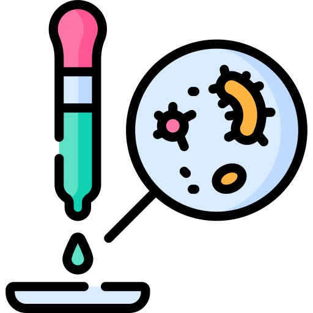
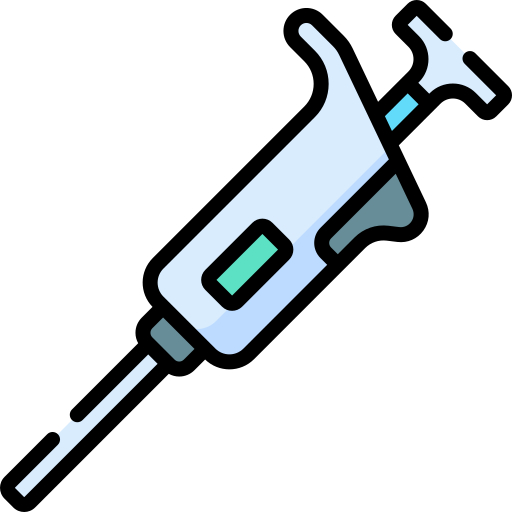
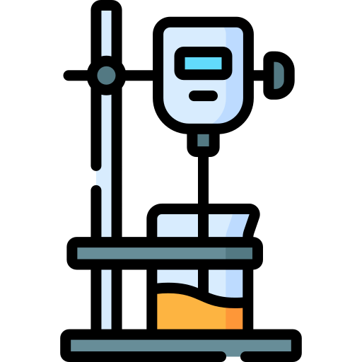
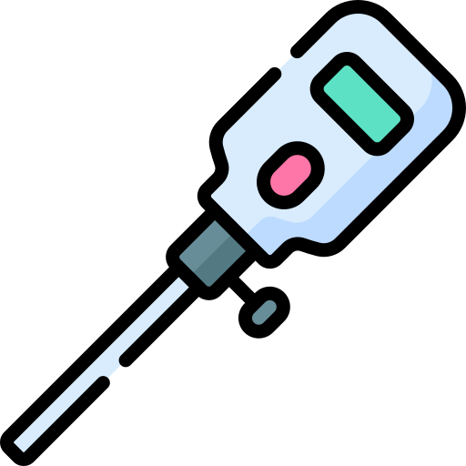
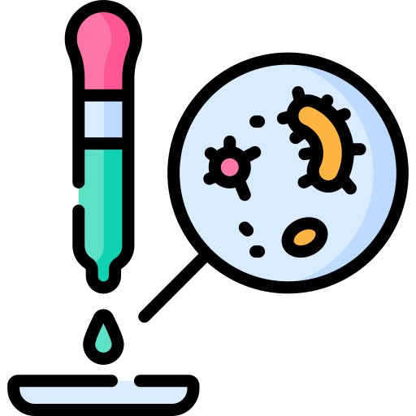
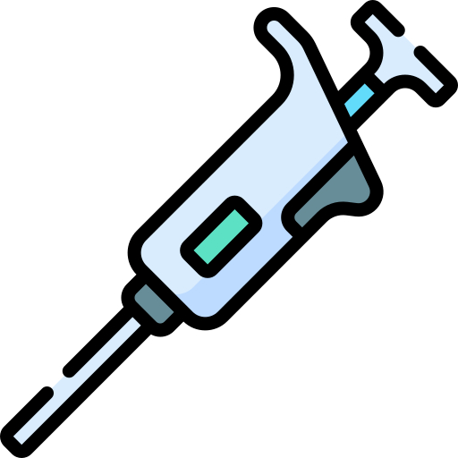
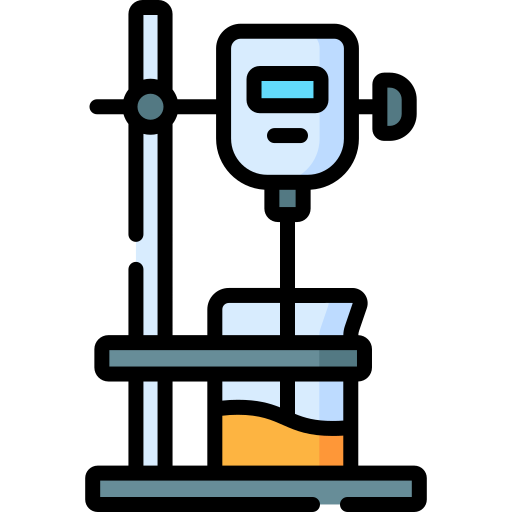
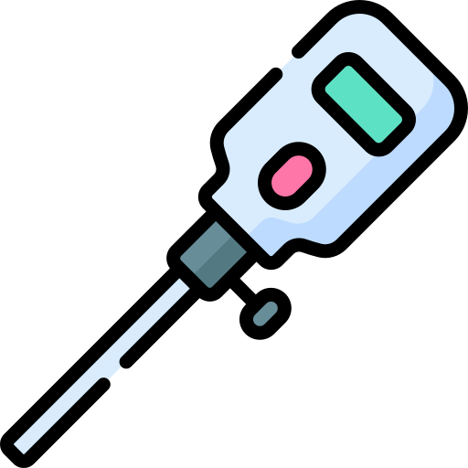

 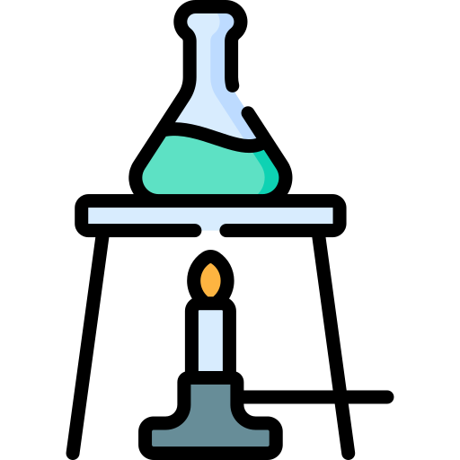
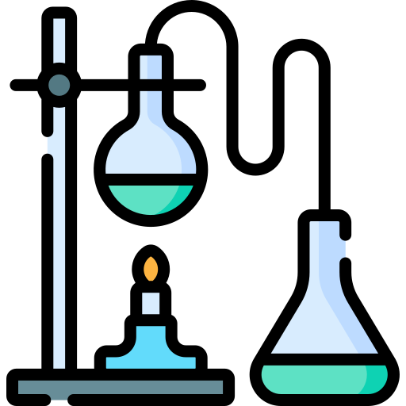
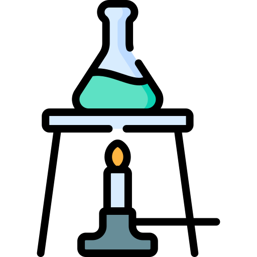
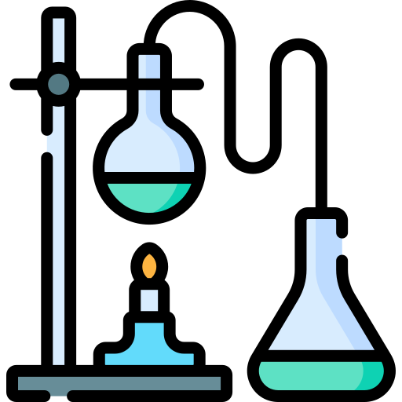
 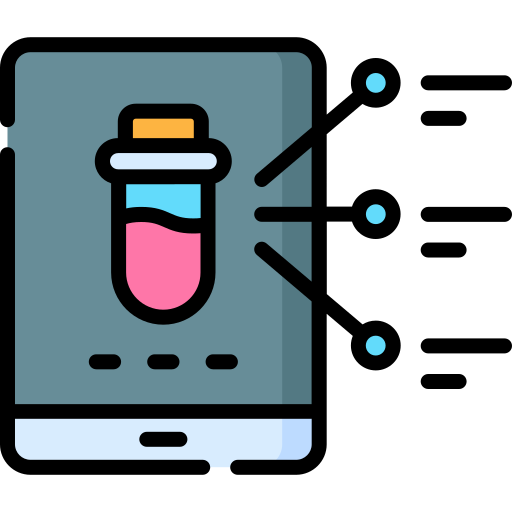
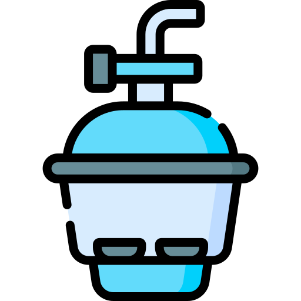
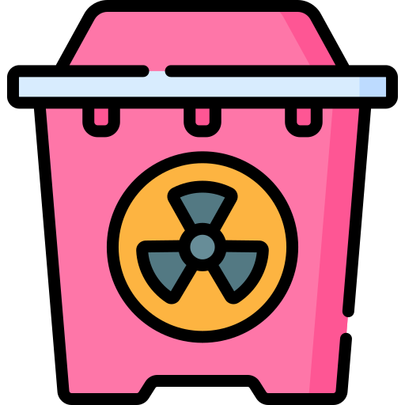
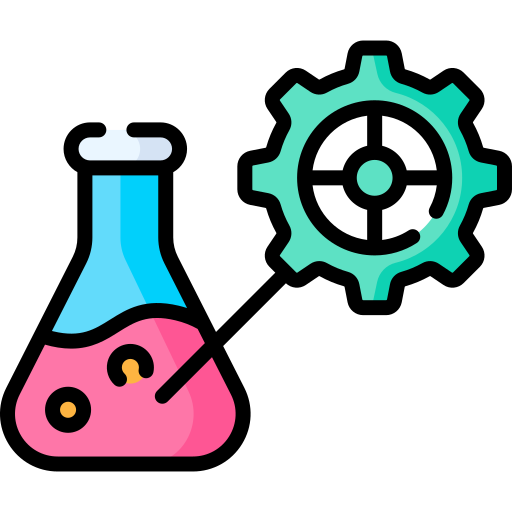
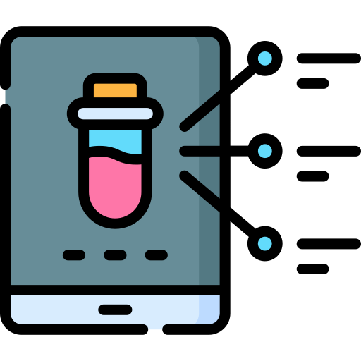
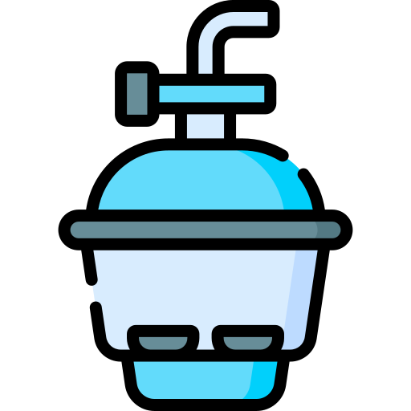
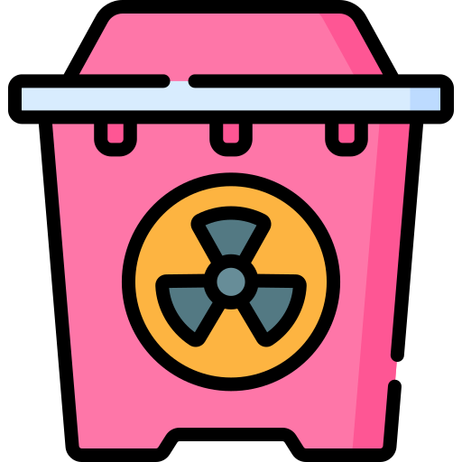
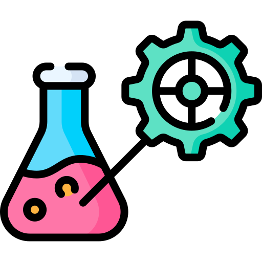
 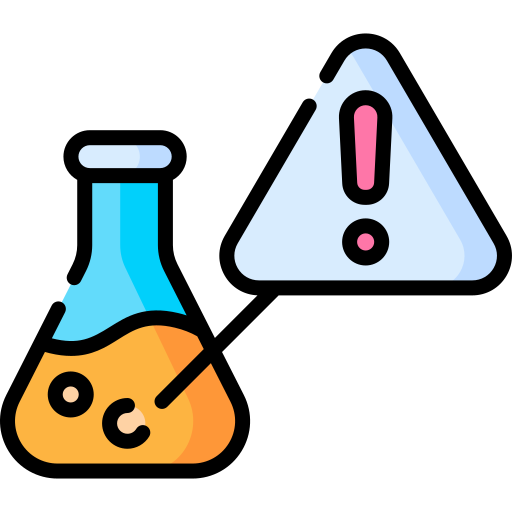
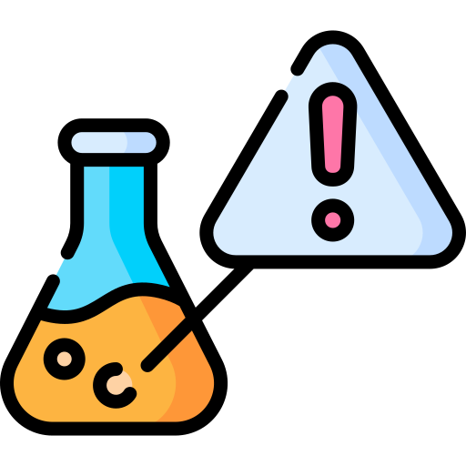
 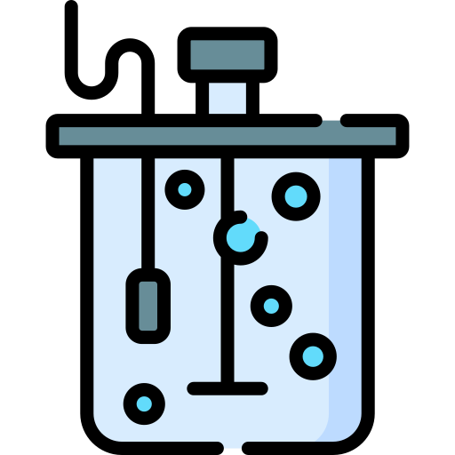
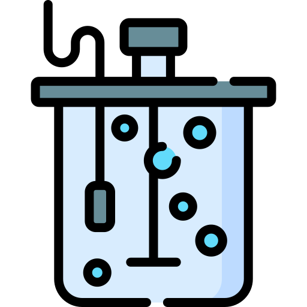


 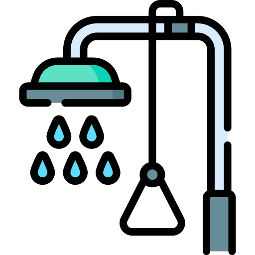
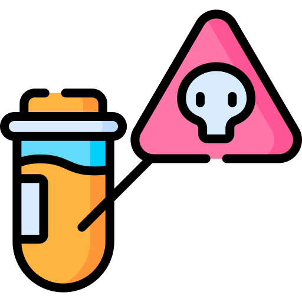
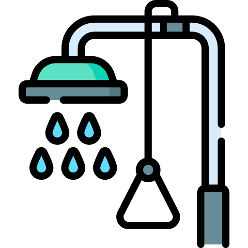
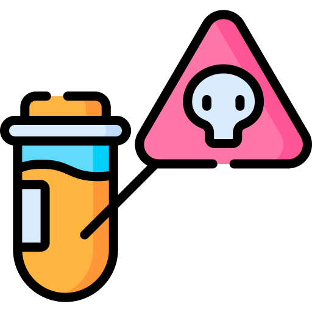